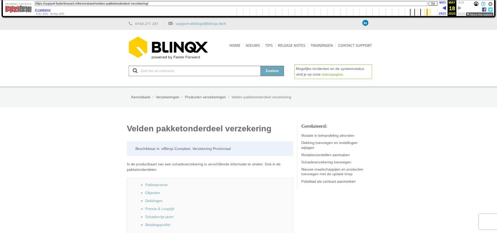

Velden pakketonderdeel verzekering

Tekstinhoud
Title: Velden pakketonderdeel verzekering | Support
URL: https://web.archive.org/web/20250518002501/https://support.fasterforward.nl/kennisbank/velden-pakketonderdeel-verzekering/
Source element: <article>
---
Velden pakketonderdeel verzekering
Beschikbaar in: eBlinqx Compleet, Verzekering Provinciaal
In de productkaart van een schadeverzekering is verschillende informatie te vinden. Ook in de pakketonderdelen.
Pakketpremie
Objecten
Dekkingen
Premie & Looptijd
Schadevrije jaren
Betalingsprofiel
Pakketpremie
Hier kan je zien hoe de pakketpremie is opgebouwd. Bij Totaal provisie polissen zie je hoeveel provisie er is voor alle polissen binnen dit pakket. Met de knop 'Berekenen op basis van polissen' kan je de pakketpremie op elk gewenst moment zelf berekenen. De knop wordt pas zichtbaar indien er een wijziging in de pakketpremie heeft plaatsgevonden. Om de knop zichtbaar te maken, kan je klikken op het wijzigingsicoon achter de pakketpremie.
Bij 'Pakketkorting' staat de totale korting van het hele pakket. Zo zie je direct de totale korting van alles premies in dit pakket. De pakketkorting wordt berekend doordat uit alle polissen het 'Termijnbedrag pakketkorting' wordt opgeteld.
Objecten
Afhankelijk van het gekozen type schadeverzekering kan er een bepaald object worden geselecteerd of aangemaakt (afhankelijk van de geselecteerde branchecode).
Dekkingen
Afhankelijk van de gekozen branche worden er dekkingen toegevoegd. Op één deel is het mogelijk dat er meerdere dekkingen van toepassing zijn. Alle benodigde dekkingen kunnen worden toegevoegd. Alle velden zijn puur ter registratie.
Premie & Looptijd
De premie velden en looptijden worden gevuld naar aanleiding van de verkregen polis. Op basis van de invoer worden vergoedingen aangemaakt. Een aantal van deze velden worden bijgewerkt vanuit de ADN mutatie en prolongatieberichten.
Schadevrije jaren
Indien je de juiste rechten hebt, kan je onder de persoon de schadevrije jaren instellen. Dit via het tabblad Partijen & objecten – betreffende persoon – kopje schadevrije jaren. Middels het plusicoon kan je de schadevrije jaren toevoegen. Via het rode kruisje kan je deze verwijderen.
Wanneer je een nieuw product opvoert of een bestaand product wijzigt dan kan je in de productkaart deze openstaande vrije jaren overnemen. De branche van het schadeproduct moet dan wel branche 020, 021, 024 en 025 zijn.
Betalingsprofiel
Een apart invoerveld is 'Betalingsprofiel'. Deze wordt alleen gevuld indien er automatisch facturen aangemaakt moeten worden.
Laatste update: 5 juli 2024
Was deze informatie nuttig?
Ja Nee